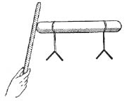
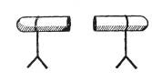
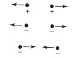
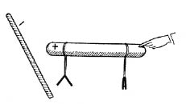
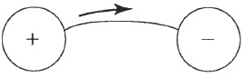

Okuyacağınız sayfalar, çok basit birkaç deneyin sıkıcı bir raporunu içermektedir. Anlatılanlar, yalnız deneylerin betimi o deneylerin uygulamada doğurduğu sonuçlara oranla ilginç olmadığı için değil, ama deneylerin anlamı, teori ile aydınlatılmasına kadar, karanlık kaldığı için de sıkıcı olacaktır. Amacımız, teorinin fizikteki değerini gösteren çarpıcı bir örnek vermektir.
1) Metal bir çubuk, camdan bir tabana tutturuluyor ve çubuğun her iki ucu bir telle bir elektroskoba (elektrik bildirecine) bağlanıyor. Elektroskop, aslında, kısa bir metal parçasının ucundan sarkan iki altın yapraktan oluşmuş bir aygıttır. Bu, camdan bir kavanoza ya da kaba kapatılmıştır ve metal, yalnız yalıtkan denen, metal olmayan cisimlere değmektedir. Elektroskoptan ve metal çubuktan başka, elimizde sert lastikten bir çubuk ve bez parçası bulunuyor.
Deney şöyle yapılıyor: Önce, altından yaprakların birbirine bitişik olup olmadığına bakıyoruz; çünkü normal durumları birbirine bitişik olmalarıdır. Böyle değillerse, metal çubuğa parmakla dokunmak, onları bitişik duruma getirecektir. Bu ön hazırlık yapıldıktan sonra, lastik çubuk bez parçasına sertçe sürtülür ve ardından hemen metale değdirilir. Yapraklar, birdenbire ayrılır! Lastik çubuk çekildikten sonra bile öyle kalır. [Şekil-23]

[Şekil-23]
2) Aynı aygıtı kullanarak, altın yapraklar gene bitişikken, başka bir deney yapıyoruz. Bu kez, bez parçasına sürtülen lastik çubuğu metale değdirmiyoruz, yalnız yaklaştırıyoruz. Yapraklar gene ayrılır. Ama bu kez bir fark vardır! Lastik çubuk, metale değdirilmeden uzaklaştırılırsa, yapraklar ayrı kalmaz, tersine, çabucak sarkıp normal durumlarını alır.
3) Üçüncü bir deney için bu aygıtta biraz değişiklik yapalım. Metal, birbirine tutturulmuş iki parçadan yapılmış olsun. Lastik çubuğu beze sürtüp gene metale yaklaştırıyoruz. Aynı görüngüyle karşılaşırız. Yapraklar ayrılır. Şimdi ise metali, ikiye, parçalarına ayıralım ve lastik çubuğu çekelim. Bu durumda, yaprakların ikinci deneyde olduğu gibi sarkıp normal durumlarını almadığı, ayrı kaldığı görülür. [Şekil-24]

[Şekil-24]
Bu basit ve kaba deneylere büyük ilgi göstermek güçtür. Ortaçağda bu deneyleri yapanları belki de yargılayıp cezalandırırlardı. Oysa bu deneyler, bize bönce ve mantıksız görünür. Yukarıda anlatılanları, kafası karışmadan yalnız bir kez okuyan bir kimsenin söz konusu deneyleri bir daha yapması çok güç olurdu. Teoriyi biraz bilmek, bu deneyleri anlamaya yeter. Şöyle de diyebilirdik: Böyle deneylerin rastlantı ile yapıldığını düşünmek, onların anlamları üzerine önceden epeyce belirli düşünceler yoksa, olanaksızdır denebilir.
Şimdi, anlatılan bütün bu olguları açıklayan çok basit ve kaba bir teorinin dayandığı düşünceleri söyleyeceğiz.
İki türlü elektrik akışkanı (fluid) vardır, birine artı (+) öbürüne eksi (-) akışkan denir. Bunlar, şimdiye dek açıklanan anlamda, çokluğu artırılamayan ya da azaltılamayan, ama yalıtılmış bir sistemde toplamı değişmeden kalan töz gibidir. Bununla birlikte, bu durum ile ısının, maddenin ya da enerjininki arasında köklü bir fark vardır. Elimizde iki türlü elektrik tözü vardır. Burada, daha önceki para benzetmesini genelleştirmeden kullanmak olanaksızdır. Bir cisim, artı ve eksi elektrik akışkanları birbirini tümüyle ortadan kaldırıyorsa, elektrik bakımından nötrdür. Bir adamın hiç parası yoksa, ya gerçekten hiç parası olmadığı için ya da kasasına koyduğu paranın tutarı borçlarının toplamına tam eşit olduğu için öyledir. Onun ana defterinde yazılı olan alacaklarını ve vereceklerini, bu iki çeşit elektrik akışkanına benzetebiliriz.
Teorinin bundan sonraki varsayımı, aynı çeşitten olan elektrik akışkanlarının birbirini itmesi, oysa karşıt akışkanların birbirini çekmesidir. Bu, çizgilerle şöyle gösterilebilir: [Şekil-25]

[Şekil-25]
Son bir teorik varsayım daha gereklidir: İki türlü cisim vardır. İçlerinde elektrik akışkanlarının engellenmeden hareket ettiği cisimlere iletken, içlerinde elektrik akışkanlarının hareket edemediği cisimlere ise yalıtkan denir. Böyle durumlarda her zaman olduğu gibi, bu sınıflama aşırı ciddiye alınmamalıdır. Gerçeklikte ideal iletken ya da yalıtkan yoktur. Metaller, yer, insan vücudu iletkendir, ama iletkenlikleri eşit değildir. Cam, lastik, porselen vb. yalıtkandır. Hava, yukarıda anlatılan deneyleri görmüş herkesin bildiği gibi, ancak kısmen iletken sayılabilir. Durgun elektrikle ilgili deneylerin başarısız sonuçlarını havanın iletkenliğini artıran neme yormak, her zaman iyi bir özürdür.
Bu üç varsayım, anlatılan üç deneyi açıklamaya yeter. Bu deneyler üzerinde aynı sıra ile, ama elektrik akışkanları teorisinin ışığında, bir daha duracağız.
1) Lastik çubuk, normal koşullardaki bütün cisimler gibi, elektrik bakımından nötrdür. İçerdiği eksi ve artı elektrik akışkanlarının çoklukları eşittir. Lastik çubuğu bez parçasına sürterek onları ayırırız. Bu anlatım, yalnızca yapılan işlemin sonucudur; çünkü teorinin sürtme işlemine göre yarattığı terminolojinin kullanılmasıdır. Sürtmeden sonra çubukta daha çok bulunan elektrik çeşidine eksi denir. Bu da, izlenen yol ile, biçim ile ilgili bir addır. Deney kedi kürküne sürtülmüş camdan bir çubukla yapılsaydı, metal çubukta daha çok bulunan elektrik akışkanına, izlenegelen kurallara uymak için, artı demek gerekecekti. Deneyi daha ileri götürmek için, lastik çubuğu metale değdirerek, elektrik akışkanını ona aktarıyoruz. Akışkan, orada hiç engellenmeden hareket ediyor, metal çubuğun ve altın yaprakların her yanına yayılıyor. Eksinin eksiye etkisi itme olduğu için, altın yapraklar birbirinden olabildiği kadar uzaklaşmaya çabalıyor ve sonuç, onların gözlediğimiz ayrılması oluyor. Metal çubuk cama ya da başka bir yalıtkana tutturulduğu için, akışkan, havanın iletkenliği izin verdiği sürece, iletkende kalıyor. Deneye başlamadan önce metal çubuğa neden dokunmamız gerektiğini şimdi anlıyoruz. Metale dokunulunca, metal, insan vücudu ile yer, tek ve dev bir iletken oluşturuyor ve elektrik akışkanı bu iletkende öylesine dağılıyor ki, pratik olarak elektroskopta hiçbir şey kalmıyor.
2) Bu deney, tıpkı önceki gibi başlıyor. Ne var ki, çubuk metale değdirilecek yerde, yalnız yaklaştırılıyor. İletkendeki iki akışkan, kolayca hareket edebildikleri için ayrılıyor: Biri çekiliyor ve öbürü itiliyor. Lastik çubuk uzaklaştırılınca, karşıt çeşitler birbirini çektiği için, iki akışkan gene karışıyor.
3) Şimdi metali ikiye ayırıyoruz ve lastik çubuğu ondan sonra çekiyoruz. Bu durumda, iki akışkan karışamıyor. Bundan ötürü, altın yapraklar iki elektrik akışkanından biri ile yüklü kalıyor ve yapraklar ayrı duruyor.
Burada anlatılan bütün olgular, bu basit teorinin ışığı altında anlaşılır görünmektedir. Aynı teori yalnız bunları değil, ama “elektrostatik”in (durgun elektrik biliminin) sınırları içinde kalan başka birçok olguyu da anlamamızı sağlar. Her teorinin amacı, bize yeni deneyler düşündürmek, yeni görüngülerin ve yeni yasaların bulunmasına kılavuzluk etmektir. Bu, bir örnekle açıklanabilir. İkinci deneyde bir değişiklik düşününüz. Lastik çubuğu metale yakın tuttuğumu ve aynı zamanda parmağımı iletkene değdirdiğimi varsayınız. [Şekil-26] Şimdi ne olacaktır? Teori şöyle yanıt veriyor:

[Şekil-26]
İtilmiş olan (-) akışkan, vücudumdan akıp gider ve bunun sonucu olarak, geride bir tek akışkan, artı akışkan, kalır. Elektroskobun yalnız lastik çubuğa yakın olan altın yaprakları ayrı kalır. Bu deney, gerçekleştirirsek, öngörüleni doğrular.
Burada üzerinde durduğumuz teori, çağdaş fizik açısından, elbette kaba sabadır ve yetersizdir; bununla birlikte, bütün fizik teorilerinin göze en çok çarpan özelliklerini gösteren iyi bir örnektir.
Bilimde, ölümsüz teori yoktur. Öteden beri olagelen şudur: Her teorinin öngördüğü olguların bazıları deneyle çürütülür. Her teorinin adım adım geliştiği bir dönemi, bir başarı çağı ve bunu izleyen bir çabucak değerden düşme çağı vardır. Biraz önce üzerinde durduğumuz ısının töz teorisinin yükselişi ve değerden düşmesi, birçok örnekten biridir. Daha derin anlamlı ve önemli olan başka örnekleri ilerde tartışacağız. Aşağı yukarı her bilimsel ilerleme, eski teorideki bir bunalımdan, ortaya çıkan güçlükleri giderme çabasından doğar. Eski düşünceleri, eski teorileri, artık geçmişin malı olsalar da, incelemeliyiz; çünkü yeni düşüncelerin ve teorilerin önemini ve geçerlik derecesini anlamanın biricik yolu budur.
Kitabımızın ilk sayfalarında, bilim adamının rolünü, gerekli olguları topladıktan sonra doğru çözümü yalnızca düşünerek bulan polis hafiyesininkine benzetmiştik. Bu benzetme, önemli bir nokta bakımından, pek yüzlek olarak nitelenmelidir. Yaşamda da, polis romanlarında da, cinayet bellidir. Hafiye; mektuplar, parmak izleri, mermiler, tabancalar aramak zorundadır. Ama hiç değilse cinayetin işlendiğini bilmektedir. Oysa bilim adamının durumu böyle değildir. Eskiler, elektriği hiç bilmeden yeterince mutlu yaşadıklarına göre, elektrik üzerine kesinlikle hiçbir şey bilmeyen bir insan düşünmek güç olmamalıdır. Böyle bir kimseye metal çubuk, altın yapraklar, şişeler, bez, sert lastikten çubuk, sözün kısası, üç deneyimizi yapmak için kullanılan bütün gereçleri verelim. Söz konusu kimse, çok kültürlü biri olabilir, ama belki de şişelere şarap koyacak ve bezi temizlik işlerinde kullanacak ve yukarıda anlattığımız şeyleri yapmak hiç aklına gelmeyecektir. Polis hafiyesi için cinayet bellidir; problem ortaya konmuştur: Cock Robin’i kim öldürdü? Oysa bilim adamı, kendi cinayetini, hiç değilse kısmen, kendisi işlemek zorundadır; ancak ondan sonra araştırmaya başlayabilir. Bundan başka, bilim adamının görevi, yalnız belirli bir durumu değil, karşılaşılmış ve hâlâ karşılaşılabilen görüngülerin hepsini açıklamaktır.
Akışkan kavramının sunuluşunda, her şeyi tözlerle ve onlar arasında etki gösteren basit kuvvetlerle açıklayan mekanikçi düşüncelerin etkisini görüyoruz. Mekanikçi görüş açısının elektriksel görüngüleri tanımlamaya uygun olup olmadığını anlamak için şu problem üzerinde düşünelim: İkisi de bir elektrikle yüklü, yani, ikisi de elektrik akışkanlarından birini daha çok taşıyan iki küçük küre var. Bu kürelerin, birbirini çekeceğini ya da iteceğini biliyoruz. Peki ama, kuvvet yalnız uzaklığa mı bağlıdır, ve öyle ise, nasıl? En basit varsayım, öyle görünüyor ki, bu kuvvetin, söz gelimi uzaklık üç kat artırılınca yeğinliği dokuzda-birine inen gravitational kuvvet gibi, uzaklığa bağlı olmasıdır. Coulomb’un yaptığı deneyler, bu yasanın gerçekten geçerli olduğunu gösterdi. Newton’un gravitation yasasını bulmasından yüz yıl sonra, Coulomb, elektrik kuvvetinin uzaklığa bunu andıran bir bağlılığı olduğunu buldu. Newton yasası ile Coulomb yasası arasındaki başlıca iki fark şunlardır: Gravitational kuvvet hep vardır, oysa elektrik kuvvetleri yalnız cisimler elektrikle yüklü olunca vardır. Gravitation durumunda yalnız çekim vardır, oysa elektrik kuvvetleri hem çekebilir, hem de itebilir.
Burada, ısı ile bağlantılı olarak düşündüğümüz aynı soru ile karşılaşıyoruz. Elektrik akışkanları ağırlıksız tözler midir? Başka bir söyleyişle, bir metal parçasının ağırlığı nötr ve yüklü olduğu zamanlar aynı mıdır? Tartılarımız hiçbir fark olmadığını gösteriyor. Bundan, akışkanların ağırlıksız tözler ailesinin üyeleri olduğu sonucunu çıkarıyoruz.
Teorinin daha da geliştirilmesi, iki yeni kavramın tanıtılmasını gerektirir. Katı tanımlardan gene kaçınacağız ve onların yerine artık yabancısı olmadığımız kavramlarla yapılan benzetmeleri kullanacağız. Isı görüngülerinin anlaşılması için, ısının kendisi ile sıcaklığı birbirinden ayırt etmenin ne kadar önemli olduğunu anımsayalım. Burada da, elektrik gerilimi (potential) ile elektrik yükünü birbirinden ayırt etmek, aynı ölçüde önemlidir. Bu iki kavram arasındaki fark, benzetmeyle şöyle açıklanabilir:
Elektrik gerilimi (potential) - Sıcaklık
Elektrik yükü - Isı
İki iletken, örneğin farklı büyüklükte iki küre, aynı elektrik yükünü, yani bir elektrik akışkanının aynı çokluğunu taşıyabilir, ama bu iki durumdaki gerilim (potential) farklı olacaktır ve küçük küre daha yüksek gerilim ve büyük küre ise daha düşük bir gerilim gösterecektir. Küçük iletkendeki elektrik akışkanının yoğunluğu daha yüksek ve bundan dolayı, o küredeki elektrik akışkanı daha çok sıkışmış olacaktır. İtici kuvvetler yoğunlukla birlikte artacağı için, küçük küredeki elektrik yükünün sızma (kaçma) eğilimi, büyük küreninkinden daha büyük olacaktır. Yükün bir iletkenden kaçmaya olan bu eğilimi, onun geriliminin dolaysız bir ölçüsüdür. Yük ile gerilim arasındaki farkı daha açık göstermek için, ısıtılmış cisimlerin davranışını tanımlayan birkaç sözün karşısında, yüklü iletkenleri ilgilendiren uygun sözler yazacağız:
| ISI | ELEKTRİK | |
| Başlangıçta farklı sıcaklıkları olan iki cisim, birbirine değdirilince, bir süre sonra aynı sıcaklığa ulaşır. | Başlangıçta farklı elektrik gerilimleri olan yalıtılmış iki iletken, birbirine değdirilince çabucak aynı gerilime ulaşır. | |
| İki cismin ısı sığaları farklı ise, eşit ısı nicelikleri, o iki cisimde farklı sıcaklık değişmeleri yaratır. | İki cismin elektrik sığaları farklı ise, aynı çokluktaki elektrik yükleri, o iki cisimde farklı elektrik gerilimleri yaratır. | |
| İnsan vücuduna değer durumda bulunan bir sıcakölçer –cıva sütununun uzunluğu ile– kendi sıcaklığını ve dolayısı ile vücudun sıcaklığını gösterir. | Bir iletkene değer durumda bulunan bir elektroskop, -altın yaprakların ayrılması ile- kendi elektrik gerilimini ve dolayısı ile iletkenin elektrik gerilimini gösterir. |
Ancak, bu karşılaştırma aşırı ileri götürülmemelidir. Bir örnek, farklılıkları olduğu kadar, benzerlikleri de gösterecektir. Sıcak bir cisim soğuk bir cisime değdirilirse, ısı, daha sıcak olandan daha soğuk olana akar. Öte yandan, eşit, ama karşıt, biri artı ve öbürü eksi yükleri olan yalıtılmış iki iletken bulunduğunu varsayıyoruz. İkisinin gerilimleri farklıdır. Alışageldiğimiz üzere, bir eksi yüke karşılık olan gerilimi, bir artı yüke karşılık olandan daha düşük sayıyoruz. Bu iki iletken birbirine değdirilirse ya da bir telle bağlanırsa, elektrik akışkanları teorisine göre, iletkenler hiç elektrik yükü farkı ve bundan dolayı da hiç elektrik gerilimi farkı göstermeyecektir. Gerilim farklılığının giderildiği kısa sürede, iletkenin birinden öbürüne bir elektrik “akımı” olduğunu düşünmeliyiz. Ama nasıl? Artı akışkan mı eksi cisme, yoksa eksi akışkan mı artı cisme akar?
Burada söz konusu edilen olgularda, bu iki seçenekten (alternative) birinde karar kılmamızı sağlayacak hiçbir dayanak yoktur. Bu olanakların ikisini de kabul edebiliriz, ya da akımın her iki yönde zamandaş olduğunu varsayabiliriz. Bu, yalnızca bir biçim sorunudur ve yapılacak seçime başka bir anlam verilemez; çünkü bu sorunu deneyle çözmenin yolunu bilmiyoruz. Çok daha derin bir elektrik teorisine ulaşan daha sonraki gelişim, bu soruya bir yanıt, basit ve ilkel elektrik akışkanları teorisinin terimleri ile söylenince, tümüyle anlamsız bir yanıt verdi. Burada yalnızca aşağıdaki anlatım biçimini benimseyeceğiz. Elektrik akışkanı, gerilimi daha yüksek olan iletkenden, gerilimi daha düşük olana akar. Böylece, deminki örneğimizde, elektrik artıdan eksiye akar. [Şekil-27] Bu anlatım, yalnızca biçimseldir ve bu bakımdan kesinlikle keyfidir. Bu güçlük, ısı ile elektrik arasındaki benzerliğin hiç de tam olmadığını göstermektedir.

[Şekil-27]
Artık mekanikçi görüşün durgun elektriğin (elektrostatiğin) ana olgularının tanımlanmasına uygulanabilirliğini biliyoruz. Aynı şey, magnetik görüngülerde de yapılabilir.